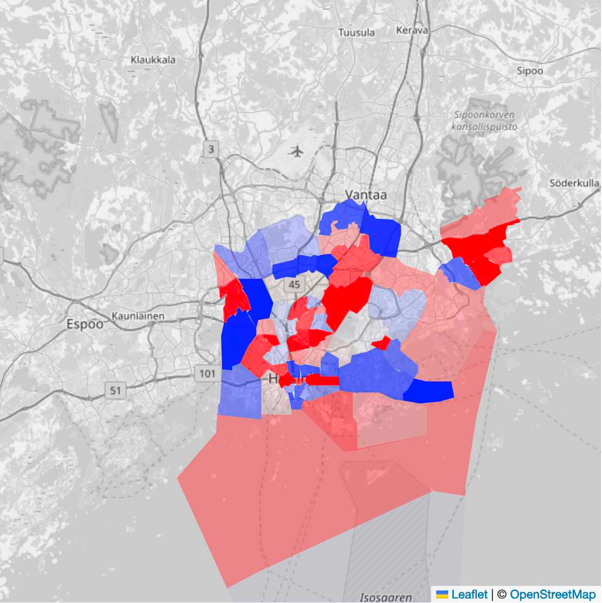

How to Locate Gentrification? |
|
|  |
Using historical income and price data, a dull map can be turned into a more useful map. Now more affluent postal code areas have red hues while postal code areas which are becoming less affluent have blue hues. Avoiding blue areas in general -- as prices are bound to fall there -- and dark red areas especially -- because there prices have close to a peak or have peaked recently. |
| Back | |